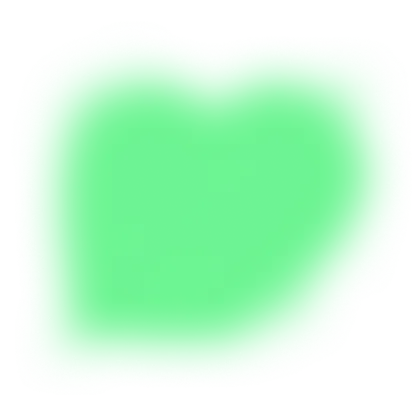
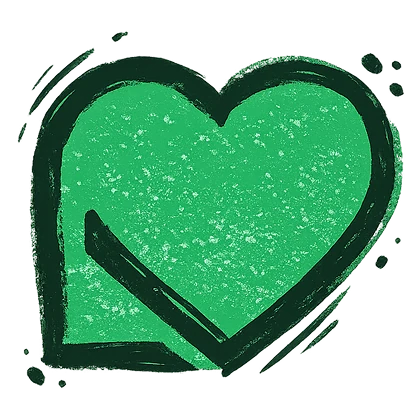

Find your number
Your cube shows a number. Tap the cells with the same number, or swipe across them in one long chain: chains score more.
CUBE MUSEUM
REVEAL THE PICTURE CUBE BY CUBE
A calm puzzle for art lovers. Fill the cubes layer by layer, and famous paintings, wonders of the world and little pixel treasures come to life. Every picture ends with a museum label and a true story.
Free demo in your browser: the first floors of the museum.
Your cube shows a number. Tap the cells with the same number, or swipe across them in one long chain: chains score more.
When a layer is full, it merges, and your cube takes the next number. Golden cubes are worth extra points.
The last layer reveals the whole picture, and a museum label tells a true story about it.
Pix is the CubePix mascot: a little pink cube with a beret, a brush and big shiny eyes. He’s the very cube you paint pictures with, only alive.
He’s a cube, and his name is Pix. Put the two together and you get CubePix: the game carries his name.
Tap Pix and he’ll hop
In the game Pix never says a word: his eyes and his brush say it all. Tap a mood and he’ll show you.
Pix is the very first cube of the Cube Museum: pink, in a beret, with a brush that never runs dry.
One night every painting in the museum crumbled into thousands of dark cubes. Only the numbers were left, little hints of which colour goes where. So Pix set out to bring the colours back, layer by layer, cube by cube. The first thing he painted was the sign over the door, the CubePix logo: in the game’s menu his brush still touches the letter P.
But there are so many pictures and only one Pix, so he asks you to help. In the game he becomes the cube in your hand: he takes the colour of your layer and cheers every chain. And for every floor you finish, the museum gives him a new costume.
In the game he’s always by your side. He takes the colour and number of your layer, smiles wider as your chain grows, gets star eyes from a golden cube and hops when a layer is done.
Missed a cell? Pix just blinks, and you try again. In the game he never says a word, so everyone understands him. Here on the site, though, he says hi in your language.
For holidays Pix dresses up: on Halloween the game’s icon turns into Pix as a pumpkin in a witch’s hat, and finishing the holiday floor gives you that costume. On every floor of the museum he stands as a statue in that floor’s costume.
In the game, costumes are rewards for finished floors, ranks and a full stamp album. Here on the site, he dresses up for holidays by himself. Tap a costume to try it on.
Hokusai, Van Gogh, Monet, Vermeer, Leonardo: famous paintings rebuilt cube by cube. The biggest are mosaics of up to 24 pieces.
No timers, no energy, no game over. One picture with a coffee or a whole floor in the evening: you set the pace.
Calm original music on real recorded instruments: piano, harp, strings, clarinet. Put your favourite record on, or let them all play in turn.
Every picture comes with a short, true fact, from the secret of Van Gogh’s brightest “star” to why a strawberry isn’t a true berry.
The exhibit of the day, the daily chest and the curator’s tasks: a small reason to come back tomorrow.
For the holidays the museum opens special floors, Halloween first. The pictures you finish stay in your collection.
Bronze, silver and gold frames for your best results, and a museum career from Visitor to Museum Director.
Every word, name and fact is translated. The game speaks your device’s language.
From a cozy corner to the Hall of Masterpieces. The next floor opens with the stars you earn on the one below, and new floors arrive with updates.
The greatest paintings in the museum, each rebuilt from cubes. Tap a painting to read its museum label.
The first floors of the museum are free to play in your browser, on a phone or a computer. The whole museum is waiting in the Android app.


Lewydo is a two-person indie game studio from Ukraine. Vlad codes, Lilya designs. Together we make the games we love to play.
Thank you for playing!